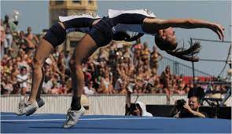

Everything you need to know about Sideline Cheer!
TUMBLING Tumbling in sideline cheer is not required nor is it as advanced as competition. You have to tumble on a track, field, or gym floor making it more difficult. Tumbling can get the crowd more excited when they see cool tricks. 
STUNTING Stunting in sideline cheer is only done when the ball is not in play due to safety reasons. Stunting can be as basic or as advanced as you would like to be. The only other rule is that you can't spin while your stunting. Many teams cheer while stunting to engage the crowd. "Preps" are most common while doing cheers in the air but you can go to an extension as well. Oftentimes Stunt groups will do unique dismounts or stretches in the air. Some teams like to throw basket tosses if they are advanced enough. Stunting is very rarely done in basketball cheer due to the unsafe circumstances but it can still be done. Overall, sideline stunting is a fun and cool way to engage spectators into the game.
CHEERS AND CHANTSSideline cheers are one of the most important parts of Cheer. In cheer, there are chants, cheers, and dances. Your captain will call out which cheer you are doing then you typically repeat it two or three times, sometimes more! It is detrimental that you yell the cheers so the spectators can hear you. Cheers typically entail something your team is doing well or needs to do better at. Additionally, there are offense and defense cheers that are used at the necessary times. Cheers are usually a few sentences long and have a different variation to them each time. "Motions" accompany the words being said that relate to the words. Chants are only a few words that are repeated until told to stop by a coach or captain. These are done while in stunts too. Basketball cheer on the other hand is different. Basketball cheers have loud stomps and claps in them because they are done on the bleachers.
UNIFORMS Sideline uniforms are always in your school colors. Most teams have two uniforms, one for home games, the other for away games. Usually in October breast cancer awareness is honored and teams wear pink bows or even uniforms. Uniforms come in all different styles and some even have mascots on them. Uniforms can be bought and customized on Varsity Cheer. For sideline it is common you wear a bow that goes with the uniform and poms that are your school colors. This is a sideline uniform!
Photos: